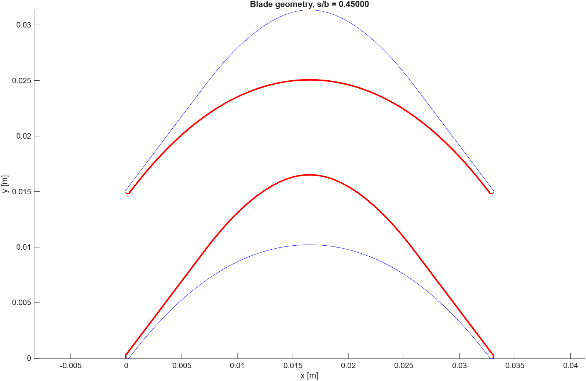
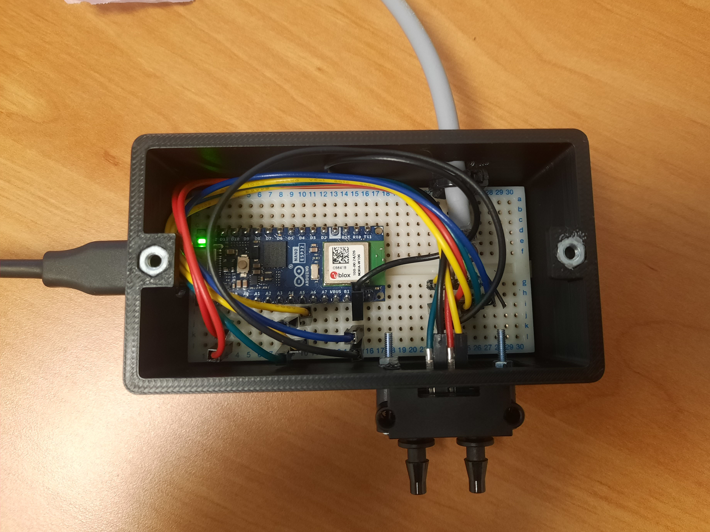
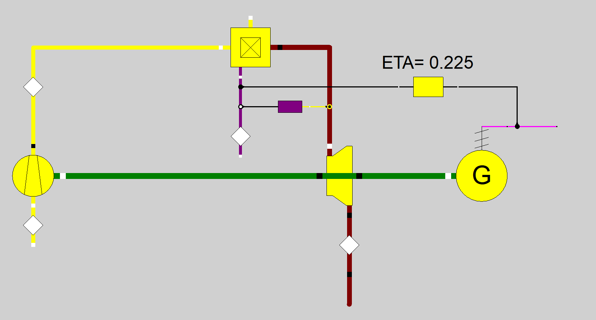
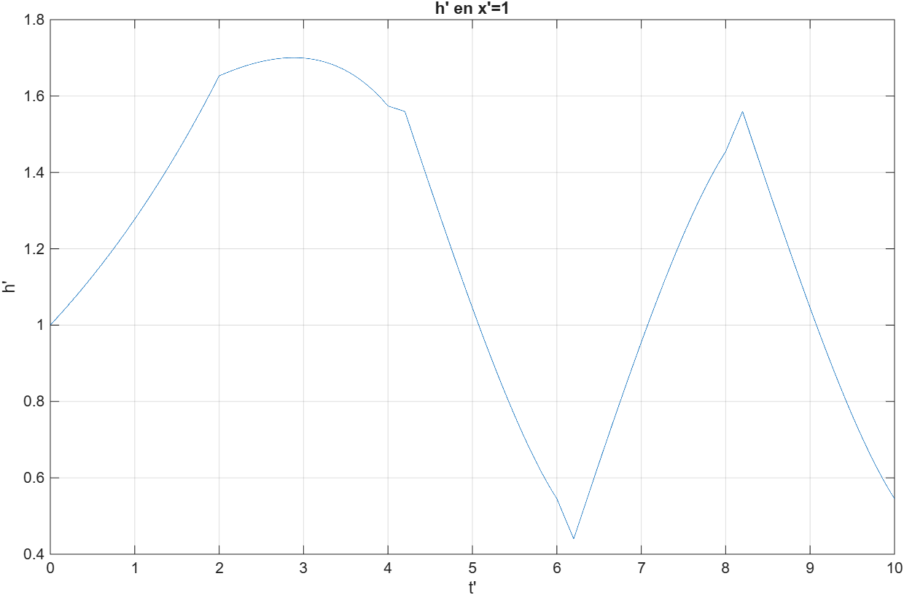

Rotor de turbine
Influence du pas inter-aubes sur les pertes d’un rotor de turbine, étudiée avec STAR-CCM+
Voir le projet →Étudiant ingénieur en mécanique et énergétique
Étudiant ingénieur en dernière année à Grenoble INP - ENSE3, je m’intéresse aux turbomachines, à la propulsion, et aux systèmes thermiques.
Je recherche un stage de fin d’études de six mois à partir de février 2027, en Île-de-France. Je souhaite travailler sur des sujets de recherche appliquée.
Ce portfolio donne un aperçu de projets que j’ai réalisés dans le cadre de ma formation ou de stages. Chaque page présente succinctement le problème étudié, les choix de modélisation et les principaux résultats et leurs limites.

Influence du pas inter-aubes sur les pertes d’un rotor de turbine, étudiée avec STAR-CCM+
Voir le projet →
Du cycle Rankine simple à la cogénération, sous EBSILON
Voir le projet →
Écoulements compressibles, chocs et comparaison entre modèle quasi-1D et CFD 2D-axisymétrique sous Fluent
Voir le projet →
Mesure de débit par pression différentielle, étalonnage et analyse des incertitudes
Voir le projet →
Étude numérique de l’écoulement laminaire autour d’un cylindre pour plusieurs Reynolds, sous OpenFOAM
Voir le projet →
Du cycle Brayton simple aux cycles combinés et à la cogénération sous EBSILON
Voir le projet →
Simulation RANS et comparaison de maillages non structuré et overset sous Fluent
Voir le projet →
Modélisation sous MATLAB des transitoires dans une conduite par la méthode des caractéristiques
Voir le projet →